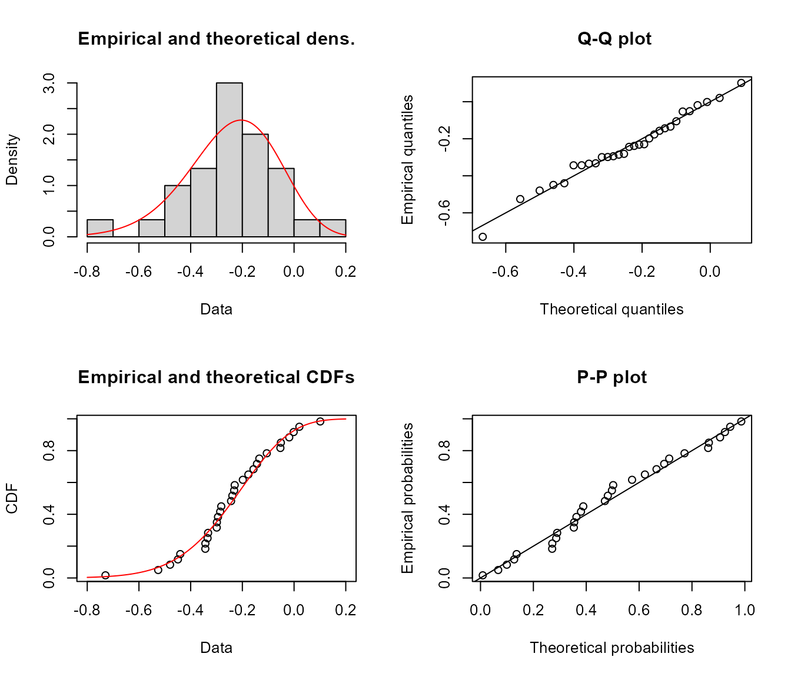
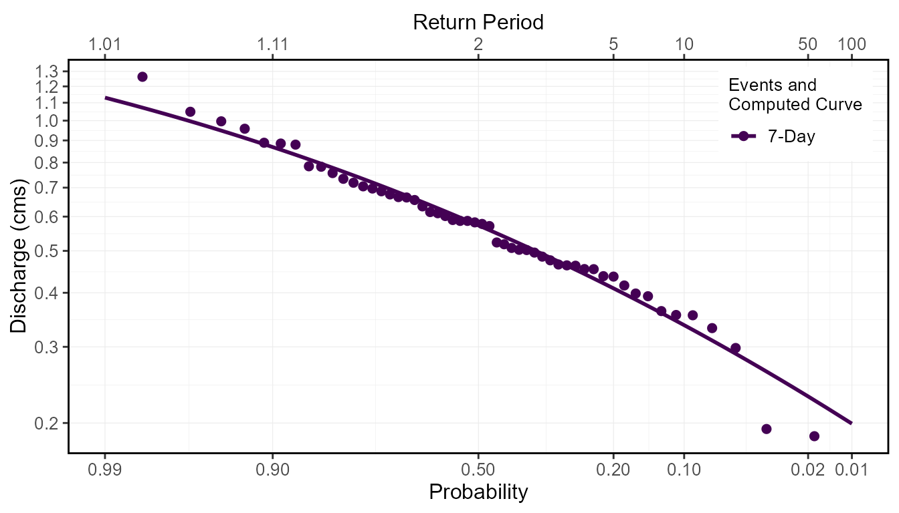

vignettes/fasstr_frequency_analysis.Rmd
fasstr_frequency_analysis.Rmdfasstr, the Flow Analysis Summary Statistics Tool for R,
is a set of R functions to
tidy, summarize, analyze, trend, and visualize streamflow data. This
package summarizes continuous daily mean streamflow data into various
daily, monthly, annual, and long-term statistics, completes trending and
frequency analyses, with outputs in both table and plot formats.
This vignette is a guide on the various volume frequency analysis
functions found in fasstr to plot frequency data and
determine frequency quantile statistics using the Log-Pearson Type III
or Weibull distributions. In this vignette you’ll learn what functions
to use for specific analyses, arguments to customize analyses, and what
results and outputs are produced.
Computing a frequency analysis with fasstr allows for
options and customization of both the inputs and outputs. These
functions plot probabilities of flow data using chosen plotting options
and calculates frequency quantiles (ex. 7Q10) based on fitting data to
either Log-Pearson Type III or Weibull distributions. There are four
functions within fasstr that conduct frequency
analyses:
compute_annual_frequencies() - conduct
an annual frequency analysis from daily streamflow data (analysis
calculates minimums/maximums and subsequently ranks that data).compute_frequency_quantile() - conduct
an annual frequency analysis from daily streamflow data and return a
specific quantile based on a duration (rolling mean days) and return
period (analysis calculates minimums/maximums and subsequently ranks
that data).compute_HYDAT_peak_frequencies() -
conduct an annual frequency analysis from instantaneous peak data
(minimum or maximum) for stations from a HYDAT database.compute_frequency_analysis() - conduct
a frequency analysis with custom data (analysis ranks data provided; is
the main frequency analysis function used within each of the frequency
analysis functions).With the exception of the compute_frequency_quantile()
function which only produces a quantile value, the frequency functions
produce five outputs contained within a list. See the sections below for
more information on each output and options. The five outputs include
the following:
compute_frequency_analysis(), computed
extremes in compute_annual_frequencies(), or HYDAT
extracted extremes in
compute_HYDAT_peak_frequencies()).fitdistplus::fitdist
object that contains information on the computed curve based on the
selected distribution (Pearson Type III (or log of) or weibull) and
fitting methods (methods of moments or maximum likelihood
estimation).To determine frequencies of annual daily minimum or daily maximum
flows, or of any duration days, from a daily streamflow data set, the
compute_annual_frequencies() and
compute_frequency_quantile() functions will take daily
data, either from HYDAT using the station_number argument
or your own data frame of data using the data argument to
complete an analysis. As with most fasstr functions,
options for rolling days, missing values, and date filtering can be
completed using the function arguments (roll_days, water_year_start,
etc).
The compute_annual_frequencies() function will produce
all five outputs from the analysis, as listed above, including the
plotting data, plot, and computed quantiles. If just the quantile is
desired, and assuming your data fits the selected distributions, the
compute_frequency_quantile() function can be used. By
supplying the desired duration (roll_days argument) and the
desired return period (return_period argument) a single
numeric quantile value will be returned from the data.
compute_HYDAT_peak_frequencies()To determine frequencies of annual instantaneous minimum or maximum
flows from stations from HYDAT, the
compute_HYDAT_peak_frequencies() function will extract the
data, if available, and complete the analysis. As this data is extracted
from HYDAT by listing the station using the station_number
argument and no pre-filtering is completed on the data, the
data argument and many of the filtering arguments are not
available for this function. If you have a data frame of your own
instantaneous maximums or minimums, a custom analysis can be completed
using the compute_frequency_analysis() function as
described below.
To complete a frequency analysis using custom data, like
peaks-over-threshold analyses, the
compute_frequency_analysis() function will take the
provided data and complete the analysis. The data provided must contain
three columns:
Here is an example of data the can be provided, wrangled from the annual lowflows function:
low_flows <- calc_annual_lowflows(station_number = "08NM116",
start_year = 1980,
end_year = 2000,
roll_days = 7)
low_flows <- dplyr::select(low_flows, Year, Value = Min_7_Day)
low_flows <- dplyr::mutate(low_flows, Measure = "7-Day")
low_flows Year Value Measure
1 1980 0.6554286 7-Day
2 1981 0.8852857 7-Day
3 1982 1.0484286 7-Day
4 1983 0.6335714 7-Day
5 1984 0.7842857 7-Day
6 1985 0.5892857 7-Day
7 1986 0.7185714 7-Day
8 1987 0.3554286 7-Day
9 1988 0.1864286 7-Day
10 1989 0.5771429 7-Day
11 1990 0.9578571 7-Day
12 1991 0.5078571 7-Day
13 1992 0.5178571 7-Day
14 1993 0.2981429 7-Day
15 1994 0.4650000 7-Day
16 1995 0.6657143 7-Day
17 1996 0.9964286 7-Day
18 1997 1.2628571 7-Day
19 1998 0.5864286 7-Day
20 1999 0.7337143 7-Day
21 2000 0.5028571 7-DayThis data can then be applied to the
compute_frequency_analysis() function. This example has the
default column names in the data and this do not need to be listed, but
are shown for demonstration.
compute_frequency_analysis(data = low_flows,
events = Year,
values = Value,
measures = Measure)The returned Freq_Analysis_Data object provides the raw data used in the frequency analyses. Based on the selected frequency function used, this tibble will contain the respective data; the provided values with the custom analysis, the computed extremes with the annual analysis, and the HYDAT extreme peaks from HYDAT in the peak analysis. See each functions’ documentation for more information. This tibble object provides the analysis data as the annual and HYDAT peak data are calculated or extracted from HYDAT.
To provide examples of the outputs, an annual analysis will be
completed on a Mission Creek HYDAT station (the plot_curve
argument is set to FALSE for the start of this
example):
freq_analysis <- compute_annual_frequencies(station_number = "08NM116",
start_year = 1981,
end_year = 2010,
roll_days = 7,
plot_curve = FALSE)The following is an example of the returned Freq_Analysis_Data tibble:
freq_analysis$Freq_Analysis_Data Year Measure Value
1 1981 7-Day 0.8852857
2 1982 7-Day 1.0484286
3 1983 7-Day 0.6335714
4 1984 7-Day 0.7842857
5 1985 7-Day 0.5892857
6 1986 7-Day 0.7185714
7 1987 7-Day 0.3554286
8 1988 7-Day 0.1864286
9 1989 7-Day 0.5771429
10 1990 7-Day 0.9578571
11 1991 7-Day 0.5078571
12 1992 7-Day 0.5178571
13 1993 7-Day 0.2981429
14 1994 7-Day 0.4650000
15 1995 7-Day 0.6657143
16 1996 7-Day 0.9964286
17 1997 7-Day 1.2628571
18 1998 7-Day 0.5864286
19 1999 7-Day 0.7337143
20 2000 7-Day 0.5028571
21 2001 7-Day 0.5705714
22 2002 7-Day 0.3314286
23 2003 7-Day 0.3628571
24 2004 7-Day 0.5228571
25 2005 7-Day 0.8890000
26 2006 7-Day 0.6967143
27 2007 7-Day 0.4538571
28 2008 7-Day 0.4628571
29 2009 7-Day 0.5021429
30 2010 7-Day 0.4535714Based on the analysis data in the Freq_Analysis_Data
object, the data is ranked, by default for low-flow frequencies, from
low to high with the lowest flow value ranked at 1. To complete
high-flow analyses and rank the data from high to low, set the
use_max argument to TRUE. The probabilities of
each event are then determined using the following generalize plotting
equation:
where:
The probability plotting positions (A and B constants) are selected
using the prob_plot_position argument, listing
'weibull' where A and B are 0, 'median' where
A and B are 0.3, or 'hazen' where A and B are 0.5. The
selected plotting position does not have an effect on the final computed
curve. To plot the data on a logarithmic scale, set the
use_log argument to TRUE.
With these options set, the data used for plotting is returned in the Freq_Plot_Data tibble object. The events are sorted by measure, and ranked by the event value, and provides the probability and the return period for each event, used for plotting. See the following for an example of this output:
freq_analysis$Freq_Plot_Data Year Measure Value Probability Return.Period
1 1988 7-Day 0.1864286 0.03225806 31.000000
2 1993 7-Day 0.2981429 0.06451613 15.500000
3 2002 7-Day 0.3314286 0.09677419 10.333333
4 1987 7-Day 0.3554286 0.12903226 7.750000
5 2003 7-Day 0.3628571 0.16129032 6.200000
6 2010 7-Day 0.4535714 0.19354839 5.166667
7 2007 7-Day 0.4538571 0.22580645 4.428571
8 2008 7-Day 0.4628571 0.25806452 3.875000
9 1994 7-Day 0.4650000 0.29032258 3.444444
10 2009 7-Day 0.5021429 0.32258065 3.100000
11 2000 7-Day 0.5028571 0.35483871 2.818182
12 1991 7-Day 0.5078571 0.38709677 2.583333
13 1992 7-Day 0.5178571 0.41935484 2.384615
14 2004 7-Day 0.5228571 0.45161290 2.214286
15 2001 7-Day 0.5705714 0.48387097 2.066667
16 1989 7-Day 0.5771429 0.51612903 1.937500
17 1998 7-Day 0.5864286 0.54838710 1.823529
18 1985 7-Day 0.5892857 0.58064516 1.722222
19 1983 7-Day 0.6335714 0.61290323 1.631579
20 1995 7-Day 0.6657143 0.64516129 1.550000
21 2006 7-Day 0.6967143 0.67741935 1.476190
22 1986 7-Day 0.7185714 0.70967742 1.409091
23 1999 7-Day 0.7337143 0.74193548 1.347826
24 1984 7-Day 0.7842857 0.77419355 1.291667
25 1981 7-Day 0.8852857 0.80645161 1.240000
26 2005 7-Day 0.8890000 0.83870968 1.192308
27 1990 7-Day 0.9578571 0.87096774 1.148148
28 1996 7-Day 0.9964286 0.90322581 1.107143
29 1982 7-Day 1.0484286 0.93548387 1.068966
30 1997 7-Day 1.2628571 0.96774194 1.033333This data is then used for plotting and returned in the
Freq_Plot ggplot2 object. See the example
below. To change the probabilities/vertical lines shown on the x-axis,
change the values using the prob_scale_points argument to
list the breaks.
freq_analysis$Freq_PlotThe fasstr functions also compute frequency quantiles,
like commonly used 7Q5, 7Q10, 5Q30, etc. Calculating frequency quantiles
requires fitting historical event data (annual minimums, maximums or
others) to a probability distribution (i.e. Log-Pearson Type III or
Weibull in fasstr). The flow quantiles are then extracted
from the distribution for given probabilities (and equivalent return
periods). In the fasstr frequency analysis functions, this
is done so by choosing a probability distribution and method of fitting
to fit the data (may require data exploration for determining most
appropriate distribution). Results from this fitting are found in 3
objects:
plot_curve
argument to TRUE (default).fitdistplus::fitdist
object that contains information about the fitting, including various
parameter estimates, fitting statistics, and various plots.Computing frequency quantiles in fasstr requires
choosing a probability distribution to fit the data, either Log-Pearson
Type III, "PIII" (default), or Weibull,
"weibull", distributions with the fit_dist
argument. When using the "PIII" distribution, data provided
is log-transformed (base 10) before being fit to a Pearson Type III
distribution. The method of fitting data to distributions is selected
using the fit_distr_method argument with either
"MLE" for ‘maximum likelihood estimation’ or
"MOM" (default) for ‘method of moments’. For the
"PIII" distribution, the data will be fit using
"MOM" or "MLE", while "weibull"
can only use "MOM". Internally, these arguments are passed
on to the fitdistrplus::fitdist function from the ‘fitdistrplus’
package (see for more information). Fitting results from the
fitdistrplus::fitdist function are returned in the
Freq_Fitting object in the list and contain information
regarding the fitting process, including the parameter estimates
(e.g. shape, location, and scale), AIC statistics, Q-Q and density
plots, amongst other statistics. As per the
fitdistrplus::fitdist documentation, there are several ways
to view the fitdist object, three of these including using
the generic print(), summary() and
plot() functions. See the following examples for how to
view some of the fitting information.
print(freq_analysis$Freq_Fitting$`7-Day`)Fitting of the distribution ' PIII ' by matching moments
Parameters:
estimate
shape 21.71135693
location 0.58975205
scale -0.03836902
summary(freq_analysis$Freq_Fitting$`7-Day`)Fitting of the distribution ' PIII ' by matching moments
Parameters :
estimate
shape 21.71135693
location 0.58975205
scale -0.03836902
Loglikelihood: 9.973448 AIC: -13.9469 BIC: -9.743303
plot(freq_analysis$Freq_Fitting$`7-Day`)
When plot_curve argument is set to TRUE
(default) the computed frequency curves are plotted against the events
data in the Freq_Plot object:
freq_analysis <- compute_annual_frequencies(station_number = "08NM116",
roll_days = 7,
plot_curve = TRUE)
freq_analysis$Freq_Plot
Based on the fitted distribution, flow events with specific
probabilities/return periods (quantiles) can be extracted from the
computed curves. The desired quantiles are selected by listing the
probabilities in the fit_quantiles argument (defaults to
c(.975, .99, .98, .95, .90, .80, .50, .20, .10, .05, .01),).
The results are returned in the Freq_Fitted_Quantiles
tibble in the list. In the example below of the quantiles, the 7Q5 value
would be the 7-day flow value with a 5-year return period, so 0.409 cms
in this example.
freq_analysis$Freq_Fitted_Quantiles Distribution Probability Return.Period X7.Day
1 PIII 0.010 100.000000 0.2009985
2 PIII 0.050 20.000000 0.2848988
3 PIII 0.100 10.000000 0.3381424
4 PIII 0.200 5.000000 0.4106176
5 PIII 0.500 2.000000 0.5724508
6 PIII 0.800 1.250000 0.7597812
7 PIII 0.900 1.111111 0.8647971
8 PIII 0.950 1.052632 0.9536358
9 PIII 0.975 1.025641 1.0313822
10 PIII 0.980 1.020408 1.0545367
11 PIII 0.990 1.010101 1.1216267As noted, when using the "PIII" distribution in
fasstr, the provided data is log-transformed (log base 10
using log10()) before being fit to a Pearson Type III
distribution. These log-transformed values are what are seen as the
‘Data’ and ‘quantiles’ axes when plotting the
Freq_Fitting fitdist objects (as seen
above). The resulting quantiles are then transformed back to the
original scale when computing the final quantiles returned in the
Fitted_Quantiles object and the plotted computed curves
in the Freq_Plot object. To use the natural log (using
log()) instead of the base 10 log, set
use_log = TRUE. Since the log of zero or negative numbers
cannot be computed, data provided with these values (e.g. data with
minimums of zero flow) will not be accepted into the functions.